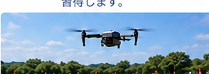
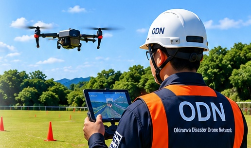
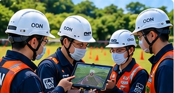
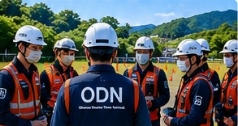
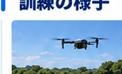
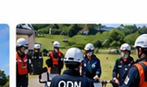
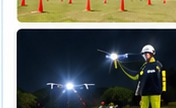

操縦技術の訓練
基本操縦から応用飛行まで、安全で確実な飛行技術を習得します。

災害時に迅速かつ安全に対応できるよう、定期的な訓練を実施し、技術の向上と体制の強化を図ります。

災害時に備え、ドローンの操縦技術や安全管理、情報収集・共有の手順を定期的に訓練します。実践的な訓練を通じて、メンバーの技術向上とチームの連携強化を図ります。
基本操縦から応用飛行まで、安全で確実な飛行技術を習得します。

飛行計画の作成、リスク評価、緊急時の対応など、安全管理の訓練を行います。

メンバー間の連絡・役割分担・情報共有など、チームとしての対応力を高めます。

年間計画に基づき、訓練内容・場所・参加者を決定します。
飛行訓練やシミュレーションを実施し、実践力を高めます。
訓練後に課題を整理し、改善点を明確にします。
定期的な訓練を通じて、個人・チームの技術と対応力を向上させます。
目視内・目視外飛行の訓練
夜間での安全な飛行技術
写真・動画撮影、マッピング
消防・行政などとの連携を想定した訓練
行方不明者の捜索を想定した訓練
トラブル時の対応手順の確認



※ 掲載画像は活動内容を説明するイメージです。実際のODNの活動実績を示すものではありません。